OTIUM — практика нарочитого досуга. В античном смысле otium — не побег от работы, а время, когда внимание возвращается к памяти, пейзажу и мысли — без прикладного дедлайна.
Мы выстраиваем маршруты для неспешного присутствия, а не для чек-листа достопримечательностей: важно быть в месте, а не «потреблять» виды.
OTIUM — не туроператор. Это приглашение пройтись, остановиться и оставить маршрут незавершённым, если свет на фасаде заслуживает ещё минуты.
Нью-Йорк — крупнейший город США, мировой финансовый и культурный узел.
Голландская колония Новый Амстердам, иммиграционные волны и небоскрёбы XX века сформировали плотную сетку кварталов. Манхэттен, музеи, театры и парки делают город символом модерна и свободы передвижения.
Великая депрессия и послевоенный бум небоскрёбов сформировали Манхэттен; кризис 1970-х сменился гентрификацией и ростом финансового сектора. 11 сентября 2001 года изменило нижний Манхэттен; город остаётся символом миграции и культурного многообразия.
Американский музей естественной истории является одним из ведущих мировых учреждений, посвященных изучению и объяснению природного мира. Расположенный на Верхнем Западном Side Манхэттена, он хранит обширные коллекции артефактов, образцов и выставок, охватывающих геологию, антропологию, астрономию и биологию. Он содержит более 32 миллионов образцов в различных дисциплинах. Центр Розы для Земли и Космоса демонстрирует современные астрономические выставки. Зал биоразнообразия подчеркивает разнообразие форм жизни по всему миру. Регулярно обновляемые выставки удерживают интерес посетителей к текущим открытиям и инновациям. Он предлагает образовательные программы для студентов и семей.
Основанный в 1869 году Джорджем Пибоди и другими, музей стал глобальным центром научных исследований и образования. Его знаковая архитектура, спроектированная Кальвертом Воусом и Джейкобом Рей Молдом, включает в себя величественные галереи и роскошные интерьеры, отражающие его исторические корни. Посетители приходят сюда, чтобы исследовать чудеса природы через интерактивные экспозиции, включая ископаемые динозавров, планетарные шоу и инновационные выставки, которые оживляют науку.
Арка Вашингтон-сквер — это неоготическая достопримечательность, расположенная в центре Гринвич-Виллидж, Нью-Йорк. Завершенная в 1892 году, она была спроектирована Стэнфордом Уайтом и является данью уважения Джорджу Вашингтону. Построенная из известняка и гранита, арка украшена сложными резьбами и декоративными деталями. Он был восстановлен несколько раз на протяжении многих лет, включая значительные ремонты в начале 20 века. Сегодня арка служит местом сбора как местных жителей, так и туристов, часто принимая культурные мероприятия и выступления. Район вокруг арки известен своей яркой кафе-культурой и оживленной атмосферой. Расположенный рядом с кампусом NYU, этот объект ежедневно привлекает студентов и посетителей.
Построенная в 1892 году, арка была заказана видными ньюйоркцами, которые хотели увековечить память генерала Джорджа Вашингтона. Спроектированная архитектором Стэнфордом Уайтом, конструкция сочетает элементы готической архитектуры с классическими деталями. Изначально она служила входом в парк Вашингтон-сквер, но с тех пор стала одним из самых знаковых символов Гринвич-Виллидж. Посетители приезжают сюда из-за его исторического значения и архитектурной красоты, что делает его обязательным для посещения для всех, кто исследует Гринвич-Виллидж.
Адрес: 10 Grand Army Plaza, Brooklyn | Период: 1941
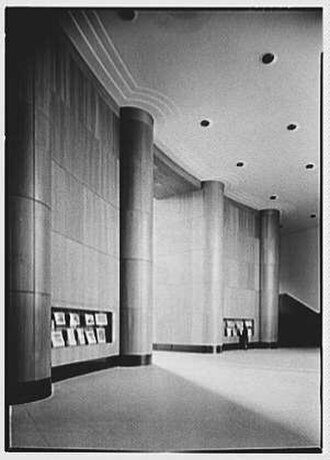
Основанная в 1903 году, Центральная библиотека Бруклина является памятником гражданской архитектуры и культурного наследия. Расположенная в самом центре Даунтаун Бруклина, она служит центром общественного участия и интеллектуального роста. Открыта в 1903 году как часть первой сети публичных библиотек Бруклина. Спроектировано известным архитектором Генри Дженевеем Харденбергом. Содержит неоклассические архитектурные элементы, включая мраморные колонны и изысканную отделку. Служит центральным ресурсом как для местных сообществ, так и для ученых. Содержит обширные коллекции книг, журналов и онлайн-баз данных.
Бруклинская публичная библиотека была основана в 1899 году с целью предоставить бесплатный доступ к книгам и ресурсам для всех жителей. Центральное отделение открыло свои двери в 1903 году, спроектированное выдающимся архитектором Генри Джаневеем Харденбергом, который также работал над знаковыми зданиями Нью-Йорка, такими как отель Плаза. Его неоклассический дизайн включает мраморные колонны, величественные лестницы и сложные детали, которые отражают как элегантность, так и функциональность. Посетите Центральное отделение, чтобы окунуться в богатую историю литературной культуры Бруклина и насладиться его обширной коллекцией книг, периодических изданий и цифровых ресурсов.
Место: Spanning East River between Manhattan and Brooklyn | Период: 1869–1883
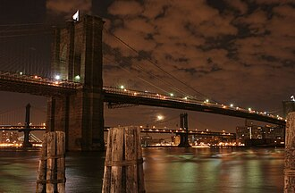
Бруклинский мост — это историческая икона, пересекающая реку Ист-Ривер и соединяющая Манхэттен и Бруклин. Завершенный в 1883 году, он был одним из первых висячих мостов в Соединенных Штатах и остается символом инженерной изобретательности. Он имеет длину примерно 1,800 метров и соединяет Бруклин с Нижним Манхэттеном. Его знаковые каменные башни высотой более 60 метров. Мост был изображен в бесчисленных фильмах, книгах и произведениях искусства. Изначально он был окрашен в ярко-оранжевый цвет, чтобы его было лучше видно на море. В 1964 году он стал Национальным историческим памятником.
Построенный в период с 1870 по 1883 год, Бруклинский мост был спроектирован Джоном Реблингом, который задумал мост, который объединит два основных района Нью-Йорка. Он использовал инновационные технологии своего времени, включая стальные тросы и каменные башни, что сделало его чудом викторианской архитектуры. Мост был открыт 24 мая 1883 года, что стало значительным достижением в гражданском строительстве. Посещение Бруклинского моста предлагает захватывающие виды на небоскребы Манхэттена и предоставляет уникальную перспективу на развитие городской инфраструктуры.
Место: Bowling Green, Financial District (installed without permit, later allowed)
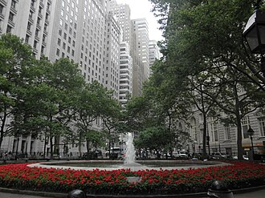
Быка, олицетворяющего силу и решимость, представляет собой бронзовая скульптура, расположенная на Южном причале в Нижнем Манхэттене. Созданная художником Артуро Ди Модика в 1987 году, она изображает мощного быка, стоящего величественно с опущенной головой и напряженными мышцами, готового броситься вперед. Скульптура высотой примерно 12 футов и весит более двух тонн. Изначально он назывался "Свобода", но позже был переименован в "Быка на зарядке" из-за своего сходства с животным, бросающимся в атаку. Быка с зарядом часто показывали в различных средствах массовой информации, включая телешоу и фильмы. В последние годы статуя привлекла внимание своими политическими интерпретациями, часто связанными с рыночными тенденциями и экономическими условиями. 6 января 2021 года скульптура на короткое время пропала после того, как была удалена властями на фоне протестов.
Установленный в декабре 1989 года без официального разрешения, Бычок стал мгновенной сенсацией. Скульптура задумывалась как символ экономической силы и устойчивости в трудные годы после рецессии. Она быстро завоевала популярность как среди местных жителей, так и среди туристов, став одной из самых знаковых достопримечательностей Нью-Йорка. Посещение Быка на Уолл-Стрит предоставляет возможность увидеть произведение современного искусства, которое стало синонимом Уолл-Стрит и финансового успеха.
Расположенный высоко над Мидтауном Манхэттена, Top of the Rock предлагает панорамные виды, простирающиеся от реки Гудзон до Центрального парка и далее. Его знаковый силуэт является обязательным для посещения для туристов, стремящихся получить вид на небоскребы Нью-Йорка с высоты птичьего полета. Открыт в 1933 году, но переименован и отремонтирован в 2005 году. Предлагает панорамные виды на 360 градусов с двух основных смотровых уровней. На верхнем уровне находится вращающийся ресторан. Находится на территории комплекса Рокфеллер-Центр. Предоставляет доступ как к закрытым, так и к открытым смотровым площадкам.
Изначально построенный как часть комплекса Рокфеллер-Центра в 1933 году, Top of the Rock был закрыт на десятилетия, прежде чем вновь открылся в 2005 году с современными удобствами, включая смотровую площадку, магазин подарков и ресторан. С тех пор он стал одной из самых популярных достопримечательностей города. Посетите Top of the Rock для незабываемых видов на знаменитые достопримечательности Нью-Йорка, такие как Эмпайр-Стейт-Билдинг, Крайслер-Билдинг и Таймс-сквер.
Здание Крайслер — это величественный небоскреб, который возвышается над горизонтом Манхэттена, символизируя экстравагантный дизайн и инженерное мастерство эпохи Арт Деко. Он достиг своей полной высоты в 319 футов в 1930 году, что на короткое время сделало его самым высоким зданием в мире, пока его не превзошло здание Эмпайр-Стейт. Его интерьер украшен роскошными материалами, такими как мрамор, латунь и бронза, демонстрируя великолепные интерьеры, характерные для стиля Арт Деко. Здание содержит офисы и торговые площади на нескольких этажах, сочетая функциональность с эстетической привлекательностью. Сегодня здание Крайслер является как историческим памятником, так и туристической достопримечательностью, привлекая посетителей круглый год. В течение дня отражающая стеклянная фасад здания создает ослепительные отражения на Пятой авеню.
Завершенное в 1930 году, здание Крайслера изначально было спроектировано как штаб-квартира корпорации Chrysler. Оно быстро стало одним из самых знаковых памятников Нью-Йорка благодаря своему характерному шпилю и сложным декоративным элементам, вдохновленным темами автомобилей и авиации. Здание по-прежнему славится своими замысловатыми деталями в стиле ар-деко, включая скульптуры херувимов и фризы, изображающие автомобильные детали. Посетители приходят восхищаться потрясающей архитектурой здания Крайслер и его статусом свидетельства золотой эпохи американского дизайна.
Адрес: 175 Fifth Avenue at Broadway, Flatiron District | Период: 1902
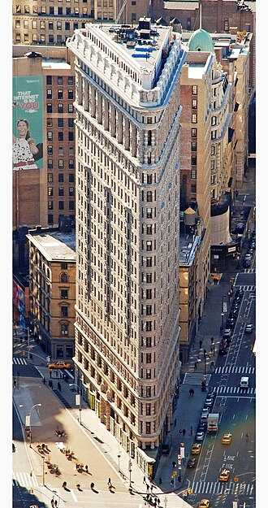
Здание Флэтайрон — это выдающаяся достопримечательность Нью-Йорка, известная своим культовым треугольным силуэтом и архитектурой в стиле ар-деко. Завершенное в 1902 году, оно было одним из самых высоких зданий в Нью-Йорке на тот момент. Его прозвище «Флэтайрон» происходит от его сходства со старомодным утюгом, используемым для глажки одежды. Расположенный на Пятой авеню рядом с Бродвеем, он выделяется своим острым углом, где встречаются три улицы. Здесь расположены как офисные помещения, так и розничные магазины, демонстрируя, как современная архитектура объединяет функциональность и эстетику. Сегодня это популярное место для туристов, ищущих панорамные виды на Таймс-сквер.
Построенное в 1902-1903 годах, здание «Флэтайрон» было изначально спроектировано архитектором Дэниелом Бернхэмом как часть его плана по модернизации горизонта Манхэттена. Уникальный дизайн здания с узким основанием и стремящейся вверх высотой сделал его одним из первых небоскребов в городе. Оно быстро стало символом городского прогресса и инноваций в начале 20 века. Посещение здания Флэтайрон предлагает потрясающие виды на Мидтаун Манхэттена и дает возможность заглянуть в богатое архитектурное наследие города.
Кони-Айленд — это всемирно известный морской парк аттракционов и пляж, расположенный на южном конце Бруклина. Известный своей культовой набережной, американскими горками и карнавальными аттракционами, он развлекает посетителей с конца 19 века. Открытый в 1895 году, Луна Парк был одним из первых парков аттракционов в Америке. Американские горки Cyclone, построенные в 1927 году, считаются одними из старейших действующих деревянных американских горок в Соединенных Штатах. Кони-Айленд проводит ежегодные мероприятия, такие как Парад русалок и Фестиваль фейерверков. Он включает в себя историческую набережную, вдоль которой расположены аркады, киоски с едой и магазины сувениров. Находится всего в нескольких остановках на метро от Манхэттена, что делает его легко доступным.
Изначально разработанный как курортная зона в конце 1800-х годов, Коней-Айленд стал знаменитым благодаря своим паркам аттракционов, таким как Луна Парк и Стииплчейз Парк. Это было одно из первых мест, где были представлены современные аттракционы и карнавальные игры, привлекая миллионы посетителей ежегодно. Сегодня он остается популярным туристическим направлением и культурной достопримечательностью. Посетите Кони-Айленд, чтобы насладиться винтажными аттракционами, ощутить морской бриз и погрузиться в богатую историю развлечений Нью-Йорка.
Метрополитен-музей искусств является одним из ведущих художественных учреждений мира, представляя обширную коллекцию, охватывающую пять тысяч лет мировой искусства и культуры. В нем хранится более двух миллионов объектов в различных отделах, включая живопись, скульптуру, декоративное искусство, костюмы и фотографию. Его знаковый Великий зал включает в себя захватывающую лестницу, спроектированную Ричардом Моррисом Хантом. Египетское крыло музея гордится одной из крупнейших коллекций за пределами самого Египта. В 2019 году он принял почти семь миллионов посетителей, что делает его одним из самых посещаемых художественных музеев в мире. Посетители могут ознакомиться с постоянными коллекциями, а также с специальными выставками, в которых представлены сменные экспозиции.
Основанный в 1870 году группой граждан Нью-Йорка, стремившихся привнести искусство мирового уровня в свой город, Метрополитен-музей стал огромным комплексом, в котором хранится более двух миллионов произведений искусства. Изначально он располагался на Пятой авеню, но в 1926 году переехал на свое текущее место по адресу 1000 Пятая авеню. Сегодня он остается центром как для туристов, так и для ученых, славясь своими обширными коллекциями, которые включают египетские древности, греческую и римскую скульптуру, средневековое искусство, европейскую живопись и американское искусство. Обязательное место для посещения для всех, кто интересуется историей искусства, Мет предлагает беспрецедентный доступ к шедеврам со всего мира.
Адрес: 99 Gansevoort Street, Meatpacking District | Период: 2015
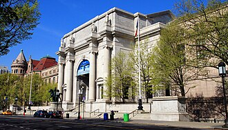
Музей американского искусства Уитни — это учреждение мирового класса, посвященное демонстрации лучших образцов современного и модернистского американского искусства. Расположенный на Верхнем Ист-Сайде, он предоставляет посетителям уникальную возможность исследовать новаторские произведения знаковых художников. Здесь находится более 20,000 произведений искусства, созданных с конца 19 века. Постоянная коллекция музея включает картины, скульптуры, фотографии и инсталляции. Значимые выставки включали работы Энди Уорхола, Джексона Поллока и Джорджии О'Киф. Его расположение по адресу 548 Западная 26-я улица предлагает потрясающие виды на небоскребы Нью-Йорка. С 2015 года музей возглавляет Адам Бенсон, который курирует его программы и коллекции.
Основанный в 1930 году, музей был основан Гертрудой Вандербильт Уитни как пространство для выставки американского искусства. Со временем его коллекция выросла и теперь включает более 20 000 произведений, что делает его одним из самых важных хранилищ американского искусства в стране. Посетители приходят сюда, чтобы увидеть передовое художественное выражение и получить представление о культурной эволюции Америки через её визуальные искусства.
Адрес: Pier 86, Hudson River at 46th Street, Hell's Kitchen
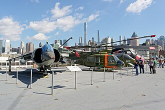
Музей морского, воздушного и космического флота «Интрепид» — это знаменитый морской и аэрокосмический музей, расположенный на Западной стороне Манхэттена. Флагманская выставка музея — авианосец USS Intrepid, который служил символом американской военной мощи во время Второй мировой войны. Здесь находится одна из крупнейших коллекций военных самолетов и космических аппаратов в Соединенных Штатах. Музей также демонстрирует исторические артефакты, такие как командный модуль Apollo 8 и шпионский самолет Lockheed SR-71 Blackbird. Посетители могут подняться на сам USS Intrepid для погружающего опыта. Расположенный рядом с парком Хадсон-Ривер, он предлагает потрясающие виды на небоскребы Нью-Йорка. Ежегодные мероприятия, такие как авиашоу и памятные церемонии, привлекают тысячи посетителей каждый год.
Основанный в 1982 году, музей изначально был создан для сохранения USS Intrepid, авианосца времён Второй мировой войны, который сыграл ключевую роль в битве за залив Лейте. Со временем он расширил свою коллекцию, включив в неё различные самолёты, космические корабли и исторические артефакты, связанные с авиацией и исследованием космоса. Посетители могут исследовать палубы, кокпиты и машинные отделения корабля, получая представление о жизни на боевом корабле и испытывая на себе технологические достижения в области военно-морской и аэрокосмической инженерии.
Шагните назад во времени в многолюдные коммуналки Нижнего Ист-Сайда Нью-Йорка в Музее коммуналок. Этот музей живой истории сохраняет рассказы иммигрантов, которые сформировали Америку через свои борьбы и победы. Два исторических жилых здания являются частью коллекции музея. Интерактивные экспозиции оживляют прошлое с помощью мультимедийных презентаций и артефактов. Экскурсии позволяют посетителям исследовать конкретные квартиры и узнать о историях отдельных семей. Музей сосредоточен на таких темах, как права трудящихся, условия жилья и культурное разнообразие. Он расположен в Нижнем Ист-Сайде Манхэттена, рядом с Чайнатауном и Малой Италией.
Основанный в 1989 году, музей занимает два восстановленных жилых здания, построенных в конце 19 века. Он рассказывает истории иммигрантских семей, которые жили здесь в годы пика иммиграции, подчеркивая их повседневную жизнь, трудности и вклад в американское общество. Посетите Музей многоквартирных домов, чтобы понять, как иммигранты преобразили Нью-Йорк и Соединенные Штаты в целом.
Адрес: 1071 Fifth Avenue, Upper East Side | Период: 1956–1959
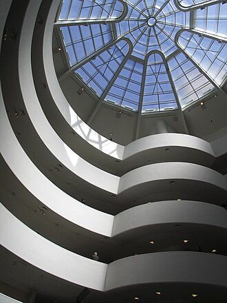
Музей Соломона Р. Гуггенхайма — это знаковое учреждение современного искусства, которое переопределило способ восприятия искусства и архитектуры. Спроектированный Фрэнком Ллойдом Райтом, он является одной из самых знаковых построек Нью-Йорка. Он расположен на Пятой авеню по адресу 891 Бродвей, Манхэттен. Его знаменитая спиральная рампа позволяет посетителям просматривать произведения искусства, поднимаясь на разные уровни. Музей располагает постоянными коллекциями современного и абстрактного искусства. В числе выдающихся художников представлены Джексон Поллок, Марк Ротко и Пабло Пикассо. Дизайн Фрэнка Ллойда Райта принес ему Золотую медаль AIA посмертно.
Завершенный в 1959 году, музей был спроектирован знаменитым архитектором Фрэнком Ллойдом Райтом для демонстрации авангардных художественных коллекций. Его характерный спиральный дизайн, вдохновленный древними майянскими храмами, стал синонимом инновационного архитектурного выражения. Посещение Гуггенхайма предоставляет уникальную возможность исследовать новаторское современное искусство в пространстве, которое безупречно сочетает искусство и архитектуру.
Адрес: 180 Greenwich Street, World Trade Center site
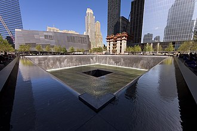
Национальный мемориал 11 сентября — это торжественное и созерцательное пространство, посвященное памяти жертв террористических атак 11 сентября 2001 года. Он расположен на месте бывшего Всемирного торгового центра в Нижнем Манхэттене и состоит из двух отражающих бассейнов, расположенных в контуре Башен-близнецов. Пулы мемориала занимают 18 акров и имеют водопады, которые в них стекают. Каждый бассейн назван в честь одной из Башен-близнецов и содержит имена всех, кто погиб в результате атак 2001 года и взрыва 1993 года. Мемориал включает в себя музей, который предлагает подробную информацию о событиях, предшествовавших атакам, и о событиях, последовавших за ними. Он расположен рядом с Граунд Зиро, недалеко от первоначального места, где когда-то стояли башни. Мемориал открыт ежедневно с бесплатным входом.
После разрушительных атак мемориал был спроектирован Михаилом Арадом и Пётром Уокером. Завершённый в 2011 году, он открылся для публики в мае 2012 года. Бассейны окружены бронзовыми панелями с именами тех, кто погиб во время атак, создавая трогательную и запоминающуюся дань памяти. Посещение Национального мемориала 11 сентября предоставляет возможность поразмышлять о трагических событиях и отдать дань уважения потерянным жизням.
Адрес: Christopher Street and surrounding blocks, Greenwich Village
Национальный памятник Стоунволл является свидетельством движения за права ЛГБТК+ и одним из самых значительных моментов в истории гражданских прав в Америке. Учрежденный в 2016 году президентом Бараком Обамой, этот памятник является первым национальным мемориалом, посвященным правам ЛГБТК+. Сюда входит бывший бар Stonewall Inn, который по-прежнему открыт как бар и культурное пространство. Монумент также включает в себя сад скульптур с символическими элементами, представляющими единство и разнообразие внутри сообщества LGBTQ+. Ежегодные Прайд-парады часто начинаются рядом с этим местом, собирая тысячи участников каждый год. Это место было объявлено Национальным историческим памятником с 2000 года.
Расположенный на улице Кристофер в Гринвич-Виллидж, бар Stonewall Inn стал местом беспорядков в июне 1969 года, которые стали началом общенациональных протестов за права гомосексуалов. Эти демонстрации стали поворотным моментом в борьбе за равные права и видимость для ЛГБТК+ сообщества. Памятник увековечивает тех, кто участвовал в этих исторических событиях, и служит напоминанием о их мужестве и стойкости. Посещение Национального памятника Стоунволл важно, потому что он увековечивает ключевой момент, когда началось современное движение за права ЛГБТК+.
Остров Эллис, символ американской иммиграции, открыл свои двери в 1892 году как первая федеральная иммиграционная станция страны. Более двенадцати миллионов иммигрантов прошли через его ворота, прежде чем он закрылся в 1954 году. С 1892 по 1954 год более 12 миллионов иммигрантов вошли в Соединенные Штаты через остров Эллис. Более 75% нынешних граждан США могут проследить свои корни до кого-то, кто прошел через остров Эллис. Иммигрантов часто встречали с простым вопросом: «Вы умеете читать?» Это определяло, могли ли они продвигаться дальше в страну. Остров несколько раз расширялся в ходе своей эксплуатации, включая дополнения, сделанные архитектором Кассом Гилбертом. Сегодня музей предлагает интерактивные экспозиции, которые оживляют исторический опыт.
Эллис-Айленд, основанный Конгрессом в 1892 году, служил основным пунктом въезда для миллионов европейских иммигрантов, стремившихся к лучшей жизни в Америке. Иконическая архитектура и инфраструктура острова обрабатывали новоприбывших с эффективностью и состраданием. Здесь прибыли такие выдающиеся личности, как Альберт Эйнштейн и Элеонор Рузвельт, на своем пути к становлению американцами. Музей сохраняет истории тех, кто сформировал культурную ткань Америки, предлагая посетителям глубокое понимание опыта иммигрантов.
Нью-Йоркская публичная библиотека (Главный филиал)
Главное отделение Нью-Йоркской публичной библиотеки — это величественное учреждение, которое является одной из самых знаковых достопримечательностей Манхэттена. Построенное в 1911 году, оно было спроектировано архитекторами McKim, Mead & White и демонстрирует архитектуру в стиле Боз-Ар, с его грандиозным мраморным фасадом и высокими внутренними пространствами. В нем хранится более восьми миллионов предметов, включая книги, манускрипты, карты и редкие коллекции. Его центральный атриум украшен скульптурами выдающихся художников, таких как Стефан Джонсон и Дэниел Честер Френч. Читальные залы библиотеки открыты для публики, предоставляя доступ к обширным исследовательским ресурсам. Он по-прежнему является центром интеллектуальных исследований и общественного участия. Главная филиал является центром культурной жизни в Мид-Манхэттене.
Завершенная в 1911 году, главная библиотека изначально носила название Библиотека Астора, в честь своего благотворителя, Джона Джейкоба Астора IV. Позже она объединилась с Библиотекой Ленокса и Тилденовским фондом, чтобы сформировать современную систему публичных библиотек Нью-Йорка. Здание было признано Национальным историческим памятником и отмечено за свою архитектурную элегантность и культурное значение. Посещение Главного филиала позволяет посетителям ощутить величие классической американской архитектуры, погружаясь в богатое литературное наследие Нью-Йорка.
В сердце Нижнего Манхэттена стоит Всемирный торговый центр One World Trade Center, символ стойкости и обновления после 11 сентября 2001 года. Это самое высокое здание в Западном полушарии высотой 1,776 футов. Обсерватория предлагает панорамные виды на Нью-Йорк и окрестности. Башня имеет вращающийся ресторан на 100-м этаже под названием «Вершина мира». В его дизайне предусмотрены устойчивые элементы, такие как энергоэффективные окна и зеленые крыши. Национальный мемориал и музей 11 сентября расположен рядом с башней.
Завершенное в 2014 году, Здание Всемирного торгового центра (One World Trade Center) заменило Башни-близнецы в качестве самого высокого здания в Нью-Йорке. Оно является частью более крупного комплекса Всемирного торгового центра, который включает несколько других зданий, спроектированных знаменитым архитектором Дэвидом Чайлдсом. Уникальная форма и высота башни делают ее видимой за многие мили, служа как современным ориентиром, так и данью уважения тем, кто потерял свои жизни в тот роковой день. Посетите One World Trade Center ради его захватывающих видов, знаковой архитектуры и символического значения.
Адрес: Between Fifth and Sixth Avenues, 48th–51st Streets
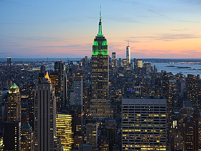
Рокфеллеровский центр — это всемирно известный комплекс зданий и площадей, расположенный в Мидтауне Манхэттена, известный своей знаковой архитектурой в стиле ар-деко и рождественской елкой на главном катке. Центр состоит из 19 зданий, расположенных вокруг нескольких дворов и открытых пространств. В него входит знаменитый Радио Сити Мьюзик Холл, который открылся в 1932 году. Каток привлекает миллионы посетителей ежегодно, особенно в праздничный сезон. Знаменитая рождественская елка выставляется каждый год с 1931 года, за исключением периода Второй мировой войны. В 2015 году он был объявлен Национальным историческим памятником.
Построенный в период с 1930 по 1939 год во время Великой депрессии, Рокфеллер-центр был спроектирован известными архитекторами, включая Рэймонда Худа и фирму Уитни Уоррена и Джорджа Хоу. Изначально он служил штаб-квартирой NBC Radio, а позже стал домом для различных офисов, магазинов, ресторанов и развлекательных заведений. Знаменитая каток и рождественская елка стали ежегодными зимними аттракционами с 1933 года. Обязательная к посещению достопримечательность, которая отражает дух художественности и праздничных традиций Нью-Йорка.
Собор Святого Иоанна Божественного — это величественный и высокий собор, расположенный на Верхнем Западе Манхэттена. Этот шедевр готического возрождения, строительство которого началось в 1892 году, до сих пор не завершен, оставляя его строительство открытым для интерпретации и удивления. Это крупнейший готический собор в Северной Америке. Его строительство продолжается с 1892 года и до сих пор не завершено. Интерьер включает в себя выдающиеся произведения таких художников, как Луис Комфорт Тиффани. Посетители могут увидеть часовню Святой Цецилии, посвященную музыке. Вокруг собора расположены обширные сады и территории.
Строительство началось в 1892 году в рамках дальновидных планов по созданию религиозной архитектуры Нью-Йорка. Собор задумывался как крупнейшая готическая церковь в Америке, но остался незавершенным из-за финансовых трудностей и изменяющихся архитектурных стилей с течением времени. Несмотря на продолжающееся строительство, некоторые секции были открыты для богослужений в 1928 году. Свидетельство американских церковных амбиций, Собор Святого Иоанна Божественного приглашает посетителей исследовать его сложные витражи, изысканные резьбы и высокие шпили.
Стадион Янки — это легендарная бейсбольная арена, расположенная в районе Бронкс города Нью-Йорка. Построенный в 1923 году, он стал домом для культовых Нью-Йорк Янки с момента своего открытия и по сей день остается одним из самых известных стадионов в истории спорта. Открытый в 1923 году, он является одним из старейших бейсбольных стадионов, которые все еще используются сегодня. Принимал множество матчей Мировой серии и важные события в истории МЛБ. Обширно отремонтирован в 2008 году для повышения комфорта и доступности, не теряя при этом своего классического дизайна. Дом легендарной франшизы Нью-Йорк Янкис с момента её основания. Признан Национальным историческим памятником благодаря своему культурному и историческому значению.
Построенный в 1923 году как новый дом для Нью-Йорк Янкис, стадион Янки стал известен как Поло Граундс до того, как был переименован после приобретения команды франшизой Янки. На протяжении многих лет он претерпел значительные renovations, включая крупную реконструкцию в 2008 году, которая сохранила его историческое очарование, одновременно модернизировав удобства. Великолепная архитектура стадиона и его историческое значение сделали его обязательным для посещения памятником как для фанатов, так и для туристов. Посетите стадион Янки, чтобы ощутить богатую историю и традиции любимого времяпрепровождения Америки — Главной лиги бейсбола.
Статуя Свободы величественно возвышается на острове Свободы, являясь символом свободы и демократии, который приветствовал миллионы иммигрантов на берегах Америки. Эта знаковая скульптура была подарком Франции Соединённым Штатам и была освящена в 1886 году. Состоит в основном из медных листов на стальном каркасе. Весит примерно 225 тонн и имеет высоту 151 фут, включая пьедестал. Посвящён 28 октября 1886 года на церемонии, на которой присутствовал президент Гровер Кливленд. Расположен на острове Свободы в Нью-Йоркской гавани, доступен на пароме из Баттери-Парка или с острова Эллис. Вдохновленный Либертас, римской богиней свободы.
Созданная французским скульптором Фредериком Огюстом Бартольди и спроектированная Густавом Эйфелем, Статуя Свободы была завершена в Париже, прежде чем была разобрана и отправлена через Атлантику для сборки в Нью-Йоркской гавани. Факел статуи символизирует просвещение, в то время как ее мантия олицетворяет свободу и справедливость. Посетите Статую Свободы, чтобы увидеть один из самых известных символов свободы и надежды в мире.
Расположенная в Battery Park City, The Vessel — это стальная конструкция высотой 184 фута, напоминающая гигантский сот. Завершенная в 2019 году, она предлагает панорамные виды на небоскребы Нью-Йорка и реку Гудзон. Он состоит из 154 винтовых ступеней и 8 уровней, которые позволяют посетителям подняться на вершину. Каждый уровень имеет свою уникальную форму и размер, создавая неповторимый опыт с каждым подъемом. Структура весит примерно 8,000 тонн и содержит более 2,500 ступеней. Посетители могут насладиться едой и напитками в нескольких ресторанах и барах, расположенных в башне. В его дизайне используются устойчивые материалы и энергоэффективные технологии.
Созданный студией Томаса Хезервика, The Vessel был построен в рамках проекта по развитию Harbor Green. Он открылся для публики в мае 2019 года после нескольких лет планирования и строительства. Обязательный к посещению благодаря своей уникальной архитектуре и захватывающим видам, The Vessel предлагает современный взгляд на традиционные смотровые башни.
В сердце театрального района Нью-Йорка и бурлящего коммерческого центра находится Таймс-сквер — яркое пересечение, где Бродвей встречается с неоновыми огнями и большими мечтами. Эта знаковая площадь известна своими огромными рекламными щитами, гигантскими экранами и постоянным потоком пешеходов. Здесь расположено множество театров Бродвея и главные достопримечательности, такие как Радио-Сити Мьюзик Холл и Эмпайр-Стейт-Билдинг. Перекресток Бродвея и 42-й улицы был увековечен в бесчисленных фильмах и телешоу. Его знаковые рекламные щиты рекламировали всё, от фильмов до политических кампаний. Каждый год миллионы собираются здесь, чтобы отпраздновать Новый год, что делает это одним из крупнейших ежегодных собраний в мире. Таймс-сквер за годы претерпел множество реконструкций, чтобы сохранить свою привлекательность.
Изначально называемая Площадью Лонгэйк, она была переименована в честь газеты Times в 1904 году. Со временем она стала синонимом развлечений, торговли и ночной жизни, привлекая миллионы ежегодно как символ американской культуры и процветания. Посетители приходят на Таймс-сквер, чтобы увидеть знаменитое падение новогоднего шара, делать покупки в элитных магазинах и ощутить энергию и волнение одного из самых известных городских пространств в мире.
Место: Mid-park near 72nd Street Cross Drive, Central Park
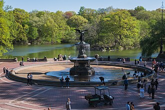
Расположенная высоко над шумным Центральным парком, терраса Бетесда и её знаковый фонтан предлагают спокойный оазис для посетителей, ищущих отдых среди суеты Нью-Йорка. Терраса названа в честь Элизабеты Паттерсон Боггс, известной как 'Леди Балтимор', которая пожертвовала средства на её строительство. Дизайн Кальверта Томпкинса включает элементы, вдохновленные древнеримской архитектурой. Центральный фонтан украшен скульптурами, изображающими сцены из греческой мифологии. В зимние месяцы фонтан превращается в популярный каток. Терраса Бетесда часто появляется в фильмах и телешоу, демонстрируя свое вечное очарование.
Построенная в 1905 году в рамках расширения Центрального парка, терраса Бетесда была спроектирована знаменитым архитектором Кальвертом Томпкинсом. Терраса оснащена впечатляющим водопадом, который падает в центральный бассейн, окруженный классическими колоннами и изысканными статуями. Этот архитектурный шедевр стал символом элегантности и спокойствия в парке. Посетители приходят на террасу Бетесда, чтобы насладиться гармоничным сочетанием природы и искусства, наслаждаясь спокойной атмосферой и любуясь красотой окружающего пейзажа.
Расположенный на Фултон-стрит в Нижнем Манхэттене, Федеральный зал изначально был построен как первое здание Капитолия США и место, где Джордж Вашингтон принял присягу в качестве первого президента страны. Он расположен по адресу 26 Уолл-стрит, рядом с перекрестком с Фултон-стрит. Первоначальное здание было спроектировано архитектором Джоном МаКомбом-младшим, который также работал над близлежащей Церковью Троицы. В 1939 году нынешний Национальный мемориал Федерального зала был реконструирован на основе исторических планов и архитектурных чертежей. Сегодня здесь находятся экспонаты, исследующие историю Конституции США и её влияние на современное управление. Соседствующая с Федеральным залом старая голландская церковь использовалась для религиозных служб во время Революционной войны.
Построенный в 1785 году в ранние годы Соединенных Штатов, Федеральный зал служил как законодательным, так и исполнительным центром для молодой нации. Именно здесь Джордж Вашингтон произнес свою инаугурационную речь 30 апреля 1789 года, что стало значимым моментом в американской истории. Позже здание стало местом размещения Верховного суда штата Нью-Йорк, пока не было снесено в 1812 году, чтобы освободить место для здания банка. Посещение Федерального зала позволяет посетителям увидеть место рождения американской демократии и задуматься о ключевых моментах, которые сформировали основы Соединенных Штатов.
Место: Elevated from Gansevoort Street to 34th Street, West Side
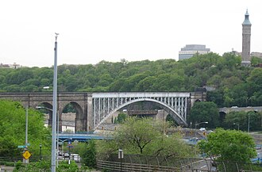
Хай Лайн — это уникальный приподнятый парк, который превращает заброшенную железную дорогу в зеленый оазис над западной частью Манхэттена. Он предлагает потрясающие виды на городской пейзаж и историческую архитектуру. Открыто в 2009 году после обширной реставрации и усилий по сохранению. Площадь более 15 акров зелёных насаждений и разнообразных видов растений. Включает современные арт-проекты известных художников, таких как Томас Демминг и Кейт Браун. Предлагает панорамные виды на небоскребы Манхэттена и реку Гудзон. Стал символом городского обновления и устойчивого развития.
Построенная в 1934 году как приподнятая грузовая железнодорожная линия, Высокая линия когда-то играла важную роль в транспортировке товаров по Нью-Йорку. После десятилетий заброшенности она была обновлена в 2009 году как общественный парк, демонстрирующий современный городской дизайн и устойчивый ландшафтный дизайн. Посетите Хай Лайн, чтобы ощутить слияние природы и городской жизни с его знаковыми видами и яркими арт-инсталляциями.
Адрес: 75 Broadway at Wall Street, Financial District
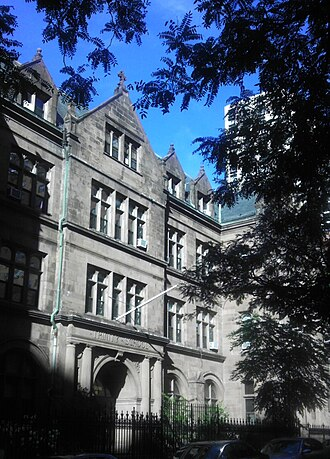
Церковь Троицы — это историческая англиканская церковь, расположенная на Уолл-стрит в Нью-Йорке. Ее высокие шпили и элегантный дизайн делают ее одной из самых знаковых достопримечательностей Нижнего Манхэттена. Величественная башня поднимается на 281 фут в небо. Считается одним из лучших примеров готического возрождения в архитектуре Америки. Церковь была серьезно повреждена во время атак 11 сентября, но позже была восстановлена в своем прежнем великолепии. В церкви по-прежнему регулярно проводятся службы, что делает её как религиозным местом, так и культурной достопримечательностью. Церковь Троицы служит мемориалом для тех, кто потерял свои жизни в атаке на Всемирный торговый центр.
Основанная в 1696 году, Церковь Троицы изначально была построена как первая англиканская церковь в Нью-Йорке. На протяжении веков она претерпела несколько ремонтов, включая крупные реставрации после терактов 11 сентября. Текущая структура, спроектированная архитектором Ричардом Апджоном, была завершена в 1846 году. Посетители приходят в Церковь Троицы ради её архитектурной красоты и исторического значения, наслаждаясь потрясающими видами на небоскрёбы Нижнего Манхэттена.
Адрес: 760 United Nations Plaza, First Avenue, Turtle Bay
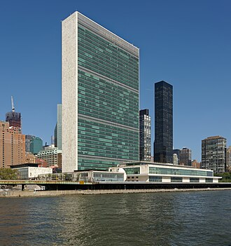
Штаб-квартира Организации Объединенных Наций — это торжественное и знаковое здание, расположенное на Восточной реке в районе Мидтаун Манхэттена. Спроектированное известными архитекторами Уоллесом К. Харрисоном и Ээро Саариненом, оно было завершено в 1950 году и стало глобальным центром международной дипломатии. Он занимает 18 акров земли на 42-й улице и Первом проспекте. На территории находятся здание Секретариата, конференц-залы и библиотека Дага Хаммаршельда. Каждый год миллионы туристов и дипломатов собираются здесь для встреч и церемоний. Здание было объявлено Национальным историческим памятником с 1966 года. ЮНИСЕФ, ВОЗ и другие агентства также имеют свои штаб-квартиры неподалеку.
Построенное в начале эпохи Холодной войны, здание штаб-квартиры символизирует многостороннее сотрудничество между нациями. В здании располагаются Зал Генеральной Ассамблеи, Залы Совета Безопасности и различные офисы, необходимые для работы ООН. Примечательными особенностями являются его характерная башня и знаменитая «Гранде Галерея», соединяющая основные здания. Посещение штаб-квартиры ООН предоставляет возможность узнать о глобальном управлении и дипломатии, демонстрируя, как страны работают вместе для решения актуальных проблем, таких как изменение климата, поддержание мира и права человека.
Эмпайр-Стейт-Билдинг — это легендарный небоскреб, который доминирует над горизонтом Нью-Йорка. Завершенный в 1931 году, он когда-то был самым высоким зданием в мире и по-прежнему остается одной из самых знаковых конструкций в Америке. В здании 102 этажа над землёй и два уровня подземного этажа. С высотой 1,454 фута он стал самым высоким зданием при открытии. Его смотровая площадка предлагает панорамные виды на Нью-Йорк. Во время Второй мировой войны он служил радиостанцией для военной связи. Сегодня это главная туристическая достопримечательность, которую annually посещают миллионы туристов.
Построенный в 1930-1931 годах, Эмпайр-Стейт-Билдинг был спроектирован Уильямом Ф. Лэмбом и построен подрядчиками Starrett Brothers & Eken. По завершении строительства он стал самым высоким зданием в мире, пока не был превзойден Хрустальным зданием в 1930 году. Дизайн здания в стиле ар-деко отличается элегантными линиями и характерными шпилями, что делает его мгновенно узнаваемым по всему миру. Посетите Эмпайр-Стейт-Билдинг, чтобы насладиться неповторимыми видами на Манхэттен и оценить архитектурное чудо, которое изменило облик современных небоскрёбов.